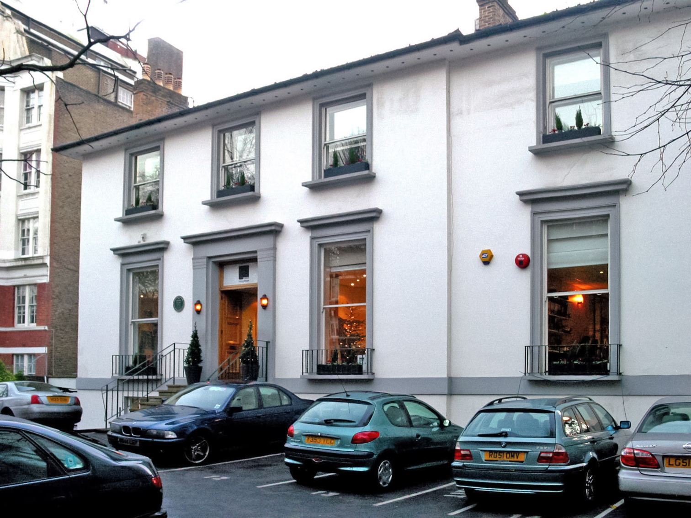
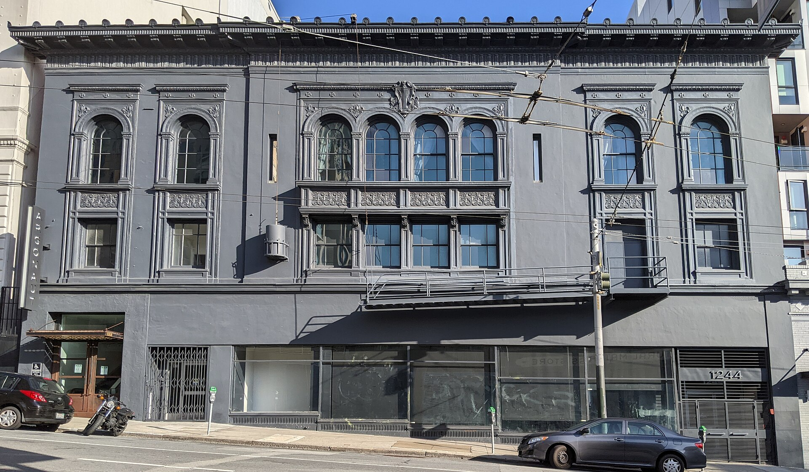
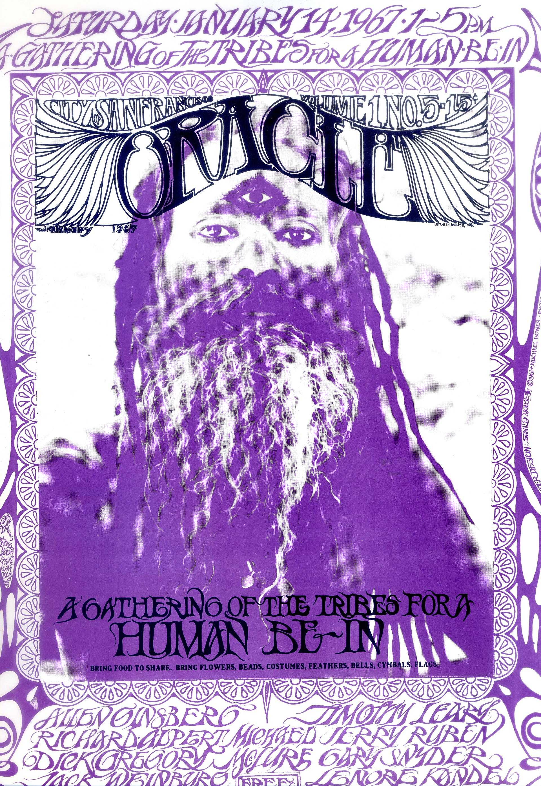
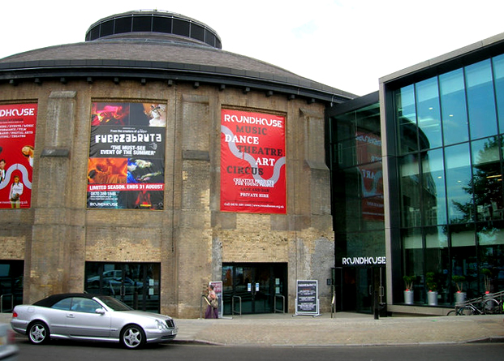
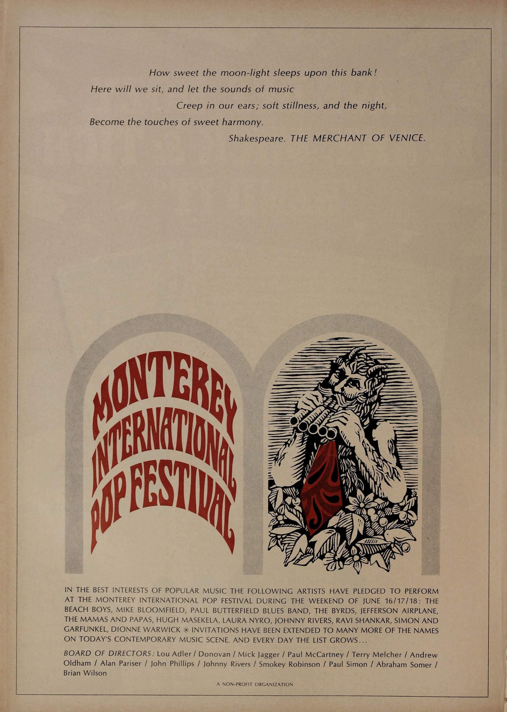
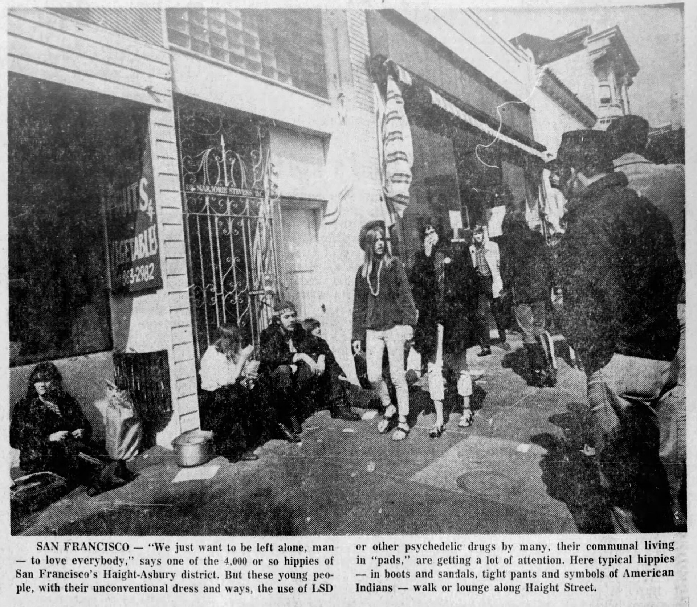
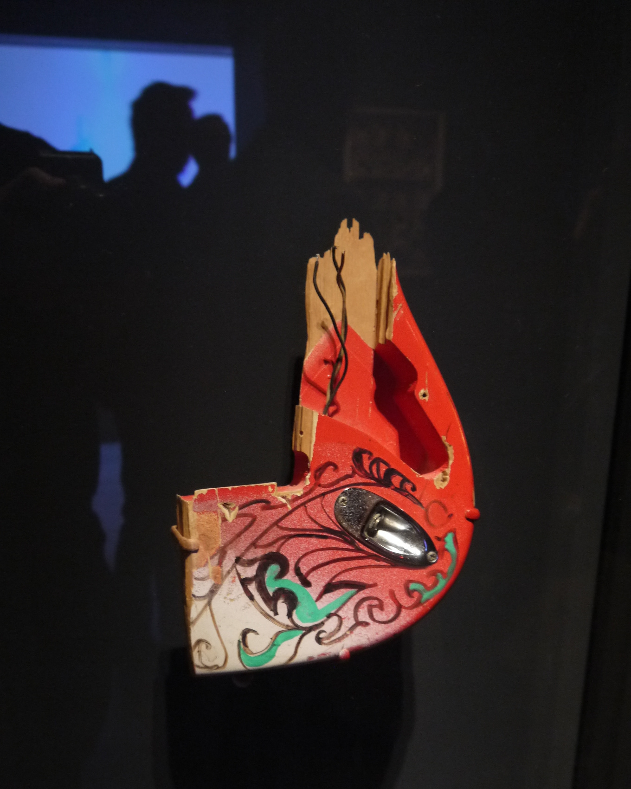
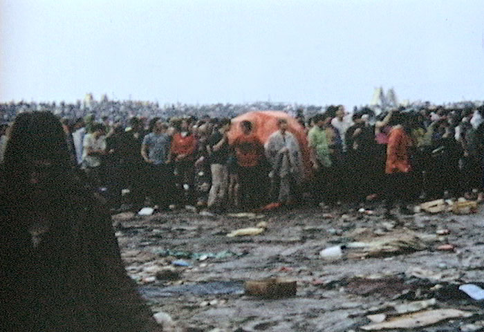

Tuesday · Music
(c. 1965–1969): studios, scenes, and longer songs
After the , studios and stretched the pop single. San Francisco, London, and a few other cities made longer songs, , and albums you were meant to sit with.

{kind=link}
“” is a press and fan word, not a union card. San Francisco , London underground clubs, Los Angeles studios, , New York, and were not one scene with a shared committee. is part of the history; is not the whole of the music. This lesson looks out from those rooms and desks. in Japan and in Brazil were running in the same years. They are not decoration, and they are not a required Asia pairing. is a same-time New York contrast, not a peer assigned by geography.
Select any words, or tap a dotted term.
- 1965 Rubber Soul / folk-rock ’ (UK, 3 December). had already put folk songs on electric twelve-string. ’s were running in California. The useful unit was still often a 45.
- 1966 Studios and ballrooms (16 May). (UK, 5 August). The ’ . at ; and the at the . opened in London on 23 December.
- 1967 Monterey / FM / Piper , 16–18 June. ’s album-cut shows on in San Francisco. ’s (UK, 4 August). , , .
- 1968 Tropicália / AI-5 and ’ debut. opened. in Brazil (13 December). and were arrested on 27 December.
- 1969 Woodstock / Altamont , 15–18 August, on ’s farm in , New York. , 6 December. Japanese was past its 1967–68 peak. and left for London.
Before
Beat groups, folk clubs, and a change of tempo
The of 1964–65 had already sold America a British version of American rhythm and blues and rock and roll. From Britain the same years were still a 45 rpm business: , package tours, pirate ships around a that limited how many records could play, and folk and R&B clubs where a singer learned other people’s songs before writing. in Los Angeles put folk repertoire on electric twelve-string and called . ’s electric turn is a different chapter. The useful fact here is the bridge: acoustic clubs and beat cellars were the school; the next records asked for more time on the disc and more time in the room.
The chemical history is narrower than the posters later claimed. In early-1960s Britain, some and working musicians used — tablets nicknamed among them — to stay awake through all-nighters. The music that fit that use was short, loud, and built to keep a floor moving. , , was an older laboratory compound that a smaller set of writers and musicians in California and London were taking by the mid-1960s. ’s , from 1965, put a house band, lights, and the drug in the same warehouses. What changed in some scenes was tempo and length, not a sudden moral collapse. A three-minute riff and a thirty-minute jam are different jobs. helped with the first. , where was part of the room, fitted the second: that did not need a verse-chorus to land, and sets that could wander. Not every group used either. The ’s long improvisations and ’ are not the same practice. Treat the drug shift as a real historical change in some crowds, and as a poor explanation for every sitar on a B-side.
, released in the United Kingdom on 3 December 1965, is the album that made that change audible on a major label without yet wearing the later costume. heard as a whole LP, not a stack of singles, and went into and in Los Angeles to answer . , for their part, were about to stop touring and treat as the instrument. and got them there. The next two years would be studios, , and a press word — — that tried to name too many rooms at once.
The era
Studios, ballrooms, FM, and a weekend in Monterey
Two kinds of room did most of the work: the recording studio and the dance hall. In Hollywood, produced with lyricist and the session players later nicknamed the . released the album on 16 May 1966. Wilson was not taking on the road as a self-contained instrumental band for those tracks. He was stacking voices and unusual instruments the way had stacked a wall of sound, then going further into quiet, bass harmonica, and dog barks. In London, from April to June 1966, recorded at on with and a young engineer, . They were still on . Automatic double tracking, close-miked drums, , and a on a vocal were hardware solutions, not metaphors. appeared in the United Kingdom on 5 August 1966. The two albums did not cause each other. They were made in the same months, in different buildings, by people were listening to one another’s finished records.

{kind=link}
San Francisco’s contribution was not first a studio method. was a circuit of . , had managed the , began putting on rock dances at the at and Geary in 1966. and the took the at Sutter and Van Ness. For a few weeks they had shared on alternate nights; then Graham leased the room and Helms moved. The format was Friday and Saturday, several bands, two sets each, a floor without seats, and a on the walls. , the , and — joined in 1966 — were local bills before they were national names. The posters on the telephone poles were the weekly newspaper: hard to read on purpose, sold afterward as objects. This lesson does not reproduce those posters. Many are still in copyright. The rooms are the evidence that survives without piracy.

.jpg){kind=link}

{kind=link}
London’s version was smaller and shorter. and John “” Hopkins opened the on 23 December 1966 in the basement of 31 , under an Irish dance hall. and played the opening night. The bills mixed bands with , films, and poetry. and the rest of the underground press treated as a weekly address. The landlord ended the residency in July 1967 after a tabloid scare; the club moved to in Chalk Farm and folded that autumn. ’s , with writing most of , was recorded at and released in the United Kingdom on 4 August 1967. and were still singles. The British underground could be a three-minute 45 and a late club in the same month.

{kind=link}
Radio had to catch up with the length. AM Top 40 still wanted three minutes. In April 1967, began playing album cuts on in San Francisco, a small station that had been filling hours with foreign-language shows. Within months the format — no jingles, album sides, records the singles chart did not know what to do with — had a name, , and copies in other cities. The LP, not the 45, became a radio unit. and were a pair: (May 1967) is the usual example, but the habit of sitting through a side was already being trained on , , and the San Francisco records that did not fade at 2:30.
, 16–18 June 1967, was the weekend the California scene rented a fairground and invited the rest of the touring world. The was organized as a non-profit. Artists played for expenses. The bill was not only San Francisco: , , , , , and . , on the board, had insisted be booked. filmed . The , that same season in , is the press name for the crowd that followed. The useful fact is the booking: soul, Indian classical music, London guitar theatre, and the local bands on one weekend, before made the itself the product.

{kind=link}

.jpg){kind=link}
United States and United Kingdom were not interchangeable. American had , album radio, and, by 1967–69, that tried to scale a dance to a field. British had a short-lived club, an official pop network (, 1967) that arrived as the pirates were squeezed, and a studio culture in which and could treat as a lab while still issuing singles. , from Birmingham, made at the end of 1967 without being a San Francisco franchise. The word “” covered both. The jobs in the room were different: a night was a dance with lights; a session was a desk, a tape machine, and a clock.
The field
Many names, and three rooms to slow down in
A gallery of three faces is the wrong picture. Name the field, then slow down. and in the studio. . and the . with . . and . . The in . in Los Angeles. in New York. In Brazil, , , . and pass through . and ran the San Francisco doors. and ran . moved albums onto . and sat at the desk; sat at . , , , , and . ’s installation gave a name before the records did. That is a crowd on purpose.
and are the studio method at full size. Wilson, not touring those tracks as a five-piece, used Hollywood session players and ’s budget to make an album whose quiet is as deliberate as its hooks. “” is a two-minute-fifty song with a bass line that does not behave like surf. , and restless, made a catalogue of tricks that other engineers could copy: backwards tape, a string octet on “,” a vocal that sounds as if is spinning because is spinning inside a . , the next year, is the record the syllabuses never let go. The 1966 pair is the better evidence of method, because the costumes had not yet become the story.
The San Francisco circuit is the live method. and , then in 1968 when Graham moved into the former . , posters, and bills that ran past midnight. ’s (February 1967) put “” and “” on AM; the same band could still play a set that did not sound like a singles revue. treated the night as improvisation. , with , were louder and shorter. is the American press name for the guitar-heavy end of that circuit. is not a synonym for every London studio experiment. The circuit also had a door price, a lease, and a promoter could lose the room. Graham’s and Helms’s were businesses in disagreement, not a commune with two addresses.
is a contemporaneous case, not an exotic footnote. In April 1967, at the Museum of Modern Art in Rio de Janeiro, showed an installation he called : penetrable structures, plants, sand, a television. took the word for a song. In 1968 and organized the collaborative album , with , , , and arrangements by . ’ own debut the same year opened with “,” a – song that changes shape the way a from 1967 changes shape, in Portuguese, with Brazilian rhythm and studio jokes. This was not San Francisco exported. was and musicians using electric guitars, tropical kitsch, and ’s older idea of — eating foreign forms — under a military dictatorship. , on 13 December 1968, hardened censorship. and were arrested on 27 December, detained, then pushed toward exile. They left for London in 1969. The records and the arrests are the same years as and . The police are the local fact.
is the transatlantic object lesson. He was an American guitarist became famous in London with and as . was issued in the United Kingdom in May 1967. At on 18 June he closed with “,” set a Fender Stratocaster on fire, and smashed . A fragment of that guitar — jack, wiring, painted wood — has been exhibited as an object. The theatre was borrowed from , had already wrecked instruments that weekend. The career was not only the fire: produced the records in London; American then carried the LP. is a two-and-a-half-minute single. The legend is longer than the .

_destroyed_by_him_at_Moterey_Pop_Festival_on_June_18,_1967_-_Play_It_Loud._MET_(2019-05-13_19.35.38_by_Eden,_Janine_and_Jim).jpg){kind=link}
Elsewhere
The same years, not a ranking of scenes
In Japan, — the mid-1960s electric-guitar boom that had heard and at once — peaked in 1967–68 with acts such as still on television. By 1969 major members were leaving; by about 1970 the boom was over. Folk and a harder “new rock” were already taking the students had bought singles. That is a fade in the same years as , not an Asian twin assigned to match San Francisco. Some Japanese musicians were already looking past the beat-group format. This lesson does not invent a Tokyo to keep the map tidy.
In New York, recorded with in 1966 and released in March 1967, with ’s banana on the sleeve and the as the live context. The Factory was not . The songs were about a different set of streets and a different set of drugs. Treat the album as contemporaneous, not as the West Coast’s missing conscience. ’s , from Los Angeles in November 1967, is another local fact: , orchestral , paranoia in the arrangements, . The , from , had already put the word on a sleeve in 1966 — — with and an amplified jug. Texas was not a suburb of .
Brazil’s , already slowed down above, belongs in this list as a same-time industry: television song , a collaborative LP, a dictatorship, and then London exile. used some of the same records the rest of the world used. was not a cover band for . The honest comparison is the calendar, not a contest over was more .
After
Woodstock, Altamont, and rock as album culture
, 15–18 August 1969, on ’s dairy farm in , New York, is the end-edge of this lesson’s story, not a beginning. Hundreds of thousands of people arrived at a site that had not been built for them. played on the morning of the 18th. The poster — a bird on a guitar neck, three days of peace and music — is the image that survived. The music business learned that a field, a sound system, and an LP culture could be a market. also learned that the market could lose control of the gate.

{kind=link}

{kind=link}
, on 6 December 1969, was a free concert in northern California that ended in crowding, fights, and the killing of in front of the stage. , the San Francisco underground station that had inherited ’s staff from , put callers on the air the next day. The useful historical point is not a sermon. is that the ’s security, lights, and door could not be improvised at highway scale. The 1960s was already a logistics problem.
What remained in the shops was . Rock, as a market category, sold long-playing records, gatefold sleeves, and time. — louder, riff-based, less interested in the — is one line out of , , and the heavier San Francisco nights. That line continues into the next decade. A later reaction would treat the album, the solo, and the as the things to refuse. That reaction becomes punk. is not this lesson. The 1965–69 story ends with a longer song, a larger crowd, and a business that had learned to bill the LP as the work.
A question
A question to keep asking
If the unit of the music changes from a three-minute 45 to a side of an LP, is being asked to sit still, and is being paid for the extra time?
Fun fact
The first song recorded for Revolver was already a studio machine
On 6 April 1966, at on , began with ’s “.” Engineer ran Lennon’s voice through a rotating speaker cabinet built for Hammond organs. Several — including a laughing voice and a distorted guitar — were mixed live on the desk because did not leave much room to stack them later. The finished is under three minutes. The “long song” in 1966 was often still a single’s length. What had changed was the method: the studio was no longer only a place to photograph a live group.